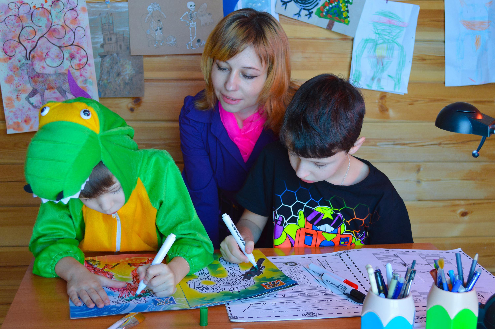

- Flexibale learning envrionment: The freedom to learn how, where, and when you please.
- The change of the pace: It is easier to pace your child(ren) acadaimic growth.
- Envrionment: Yes several parents fear of safty can be greatly reduced from outside hazards.
- Targeted Social groups: you can set up inter-actions with like minded community.
